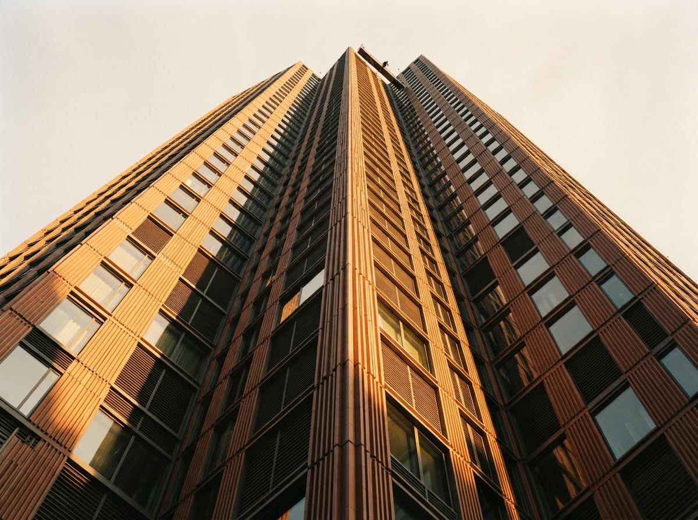
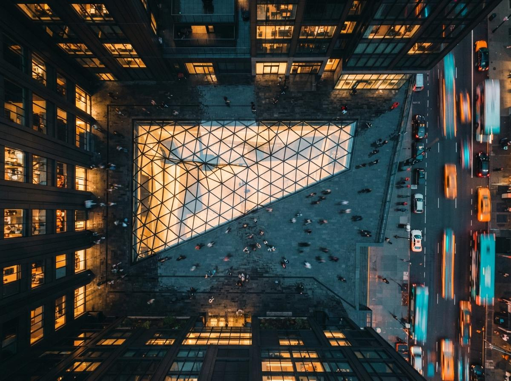

Start with why the naive version fails, because everyone tries it first. You load your render, set img2img to something like 0.6 because that is what the sample workflow used, write "photorealistic architecture, golden hour, ultra detailed," and hit run. The light does get better. It also gives you a window that was not there, a railing with one extra baluster, and a facade rhythm that no longer matches your Revit set. You did not ask for any of that. You asked for photons, and the model heard "redraw the whole frame, and while you are at it, improve the light." Denoise does not know the difference between fixing lighting and reinventing geometry. It just repaints, and the more you let it repaint, the more of your building it feels free to change.
The one number that decides everything
Denoise strength is the whole game, and for a lighting pass it lives lower than you think. Treat it as three bands. Below about 0.25, the model is polishing: it will clean noise, warm the light a step, tighten reflections, and leave your geometry almost untouched. Between 0.3 and 0.45, it starts making decisions, adding believable grime and bounce light but also nudging edges. Above 0.5, it is co-authoring the image, and your walls are now suggestions.
For the job these threads describe, improving lighting realism on a render you already approved, you want the polishing band. Start at 0.2, look at what one pass buys you, and climb in steps of 0.05 only until the light reads right. The instinct to crank it is the enemy. Every extra tenth of denoise is another tenth of your design you are handing to a model that has never seen your project.
Denoise does not know the difference between fixing the light and inventing a window. That is your job, and you do it with the slider low.

Hold the geometry with control, not with hope
Low denoise alone is not enough, because even a gentle pass drifts on long straight lines, which is most of a building. The fix is to stop hoping the model respects your edges and start forcing it. Before the img2img pass, extract a depth map and a line map from your original render, then feed both in as control. Depth holds the massing and the sense of space. A line control, canny or the Flux equivalent, pins the hard edges: window frames, floor slabs, railings, the exact places diffusion loves to wander.
With depth and line control active, you can run a slightly higher denoise and still keep your building, because the controls are re-drawing the same silhouette every step. This is the actual answer to "enhance lighting while keeping structure." Structure is not kept by asking nicely in the prompt. It is kept by a depth map and a line map doing the keeping while denoise spends its budget on light and material instead of on architecture.

Do the 4K part last, and tile it
The 4K request in that r/StableDiffusion post is where a lot of workflows fall over, and the fix is an ordering fix. Do not run your img2img pass at 4K. Diffusion models were trained near one megapixel, and pushing a single pass to 4K is how you get repeated windows, doubled figures, and melted railings, the classic tells of a model working past its native resolution. Run the lighting pass at a sane size first, around 1.5K on the long edge, get the light and materials right there, and only then upscale.
For the upscale, use a tiled approach: an upscale model to carry it to 4K, then an optional tiled diffusion pass at very low denoise, 0.15 or under, with the same depth and line controls still attached. Tiling keeps each patch inside the model's comfortable resolution, so it adds crisp brick and glass detail without the seams and repeats. The order is the trick. Light first at low resolution, detail last at high resolution, controls on the whole way through.
Prompt the light, not the building
Your prompt should describe photons and surfaces, never objects. The model already has your building from the input image and your controls. If you name architectural elements in the prompt, you are inviting it to draw fresh ones. So drop "modern house with large windows" and write about light: "late afternoon sun, warm raking light across concrete, soft ambient bounce, subtle specular on glass, physically plausible shadows." Describe the material behaviour you want, matte or polished, wet or dry, and let the geometry come entirely from the image and the controls.
| Setting | Lighting pass | Why |
|---|---|---|
| Denoise | 0.2 to 0.35 | Polishing band, changes light without redrawing walls |
| Controls | Depth + line, both on | Depth holds massing, line pins edges diffusion drifts on |
| Resolution | ~1.5K first, 4K last | Stay near the model's native size until the tiled upscale |
| Upscale pass | Tiled, denoise under 0.15 | Adds detail per tile, no repeats or seams |
| Prompt | Light and material only | Naming objects invites new ones |
Where this still fails
Two honest limits. First, if your source render has genuinely wrong lighting, flat ambient occlusion with no direction, a low-denoise pass cannot invent a sun that was never there. It refines light, it does not author it. Fix the light in your render engine first, then use this pass to make it photographic. Second, reflective glass remains the hard case. Even with controls, a lighting pass can put a reflection in a curtain wall that does not match the scene. Check every reflective surface at full resolution before you send anything to a client, because that is the tell reviewers catch first.
Our take
The beginner asking for a 4K Flux lighting workflow does not need a bigger graph. They need to stop treating img2img as a magic "make it real" button and start treating it as a lighting tool with a strict leash. Low denoise, depth and line control on the whole time, resolution climbed last through tiles, and a prompt that talks about sun and never about walls. Do that and the render stays your building, only lit like a photograph instead of a preview. Crank the slider instead and you will get a beautiful house. It just will not be the one you designed.
Written from the 26 July 2026 intel sweep, which surfaced an r/StableDiffusion thread on a 4K Flux img2img workflow for lighting realism and an r/FluxAI thread on enhancing architectural renders while keeping structure. Settings here are starting points for your own tests, not fixed values, and vary by model build and scene. ArchiGen AI carries no sponsored placements.